Wholegrip for Blender
Stop selecting every piece individually, adding the same modifier to dozens of objects and going into every view layer by hand: Wholegrip makes a collection you already have work like one object.
Make a collection you already have work like one object.

$12 once, every future version included. $12 · checkout opens soon
Paused while the download is updated to Wholegrip 1.1.4. Email us for a note when it opens.
- Click any part, get the whole thing, child collections included.
- Add a modifier once, and every part keeps it in step, even parts added later.
- Every view layer in one click, from the Outliner's own menu.
$12 once, every future version included. No subscription, no licence key, no account.
Checkout is paused while the download is updated to Wholegrip 1.1.4, so nobody receives an older file. For a note on the day it opens, email support@ochrestack.com.
Blender 4.2 LTS to 5.2 LTS · GPL source included · support@ochrestack.com · Not yet tested on a Windows PC or a Mac: if it doesn't work on yours, the 14-day refund applies · how we tested
Watch it work
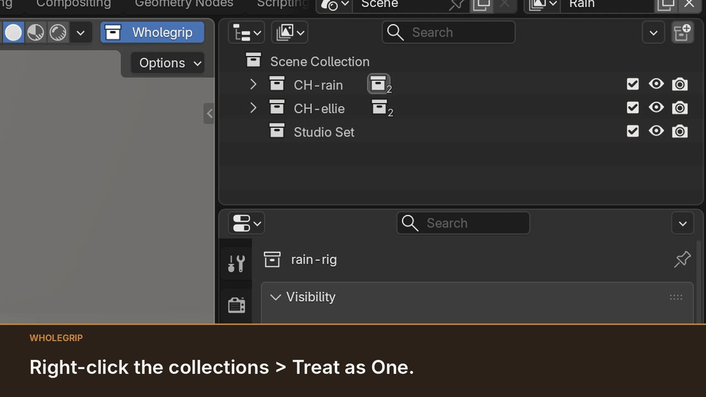
The scope in full
Blender's Select Grouped > Collection (Shift+G) selects the active object's collection; group-select add-ons exist too, built on Empties, instances or their own group data. Copy Modifiers (Ctrl+L) and right-click > Copy to Selected copy a modifier or a value once to the selected parts; they don't keep the parts in step, and a part added later gets nothing. Blender's Outliner excludes a collection in the active view layer only. With Wholegrip you pay for four things: it works on the collections already in your file, with no Empties, instances or group objects, and only on the collections you mark; the modifier stack follows the collection's membership, Geometry Nodes inputs included; the view-layer entries sit in the Outliner's own View Layer menu, with a default for new collections; and it is one tool for Blender 4.2 LTS to 5.2 LTS.
Click selection
Plain Blender: one click, one part
Wholegrip: one click, the whole desk

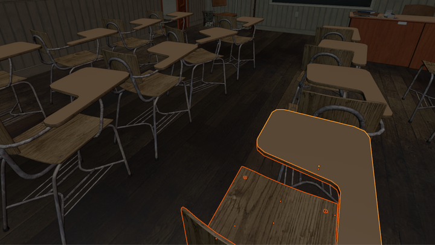
Each of the 20 desks in Christophe Seux's Classroom (CC0) is a collection of 23 parts. The same click, the same view.
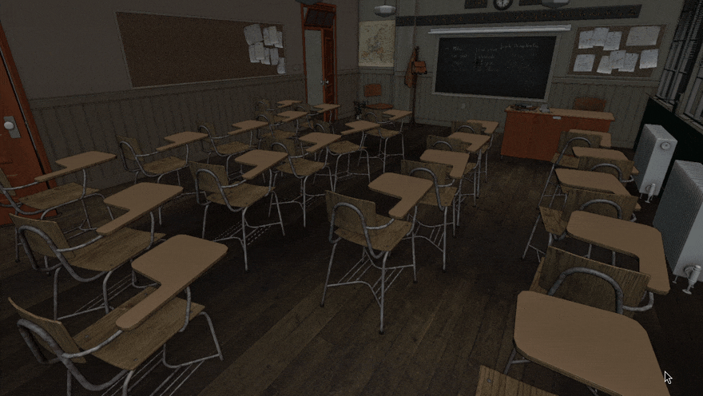
How selection works, Ctrl+click and Shift+D, and the same clicks on a character
- Mark a collection in the Outliner (right-click > Treat as One) or with the checkbox in Collection Properties. Marked collections turn blue in the Outliner; a colour you chose yourself stays. Collections you don't mark behave as in plain Blender.
- Click, box drag (Select Box tool or B) and Shift+click take whole collections; the clicked part stays active. With the Tweak tool, press any part and drag to move the whole collection.
- Ctrl+click on a part of a marked collection picks just the part under the cursor, even a part with other parts behind it; Ctrl+Shift+click adds or removes just that part. Elsewhere Ctrl+click is Blender's own.
- Shift+D on a whole marked collection puts the copy in a new collection of its own, marked, with its own copy of the collection's modifiers and the same view-layer settings, and with copies of the hidden helpers its parts use (a character's face lattice), and the copy follows the pointer; one Ctrl+Z takes it back. A click then takes the copy alone. Alt+D does the same with shared mesh data; on a single part, Shift+D is Blender's own.
- Alt+U or the Treat as One: On / Off button in the 3D Viewport header turns all of it off and on; the status bar says which.
- When a part is in two marked collections, the deepest one wins and the status bar names the other. A part directly in a marked parent selects the parent; mark its own collection to click it alone.
- A click on a part of a collection that is not wholly selected always takes that collection, even on the spot you just Ctrl+clicked. With the whole collection selected, a second click on the very same pixel goes on to the object behind, as Blender's own click does.
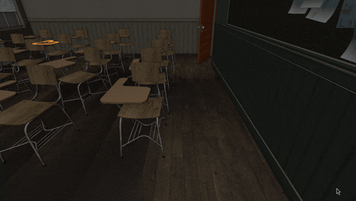
Plain Blender: one click, one shoe

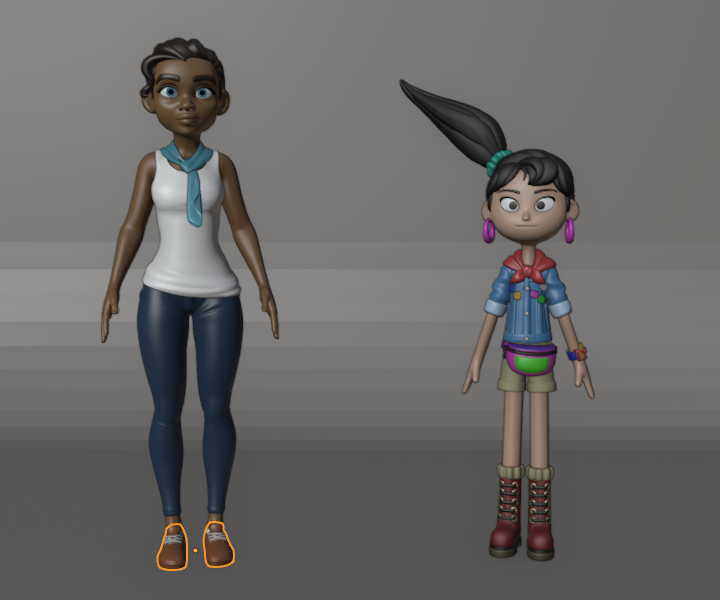
Wholegrip: one click, all of Rain

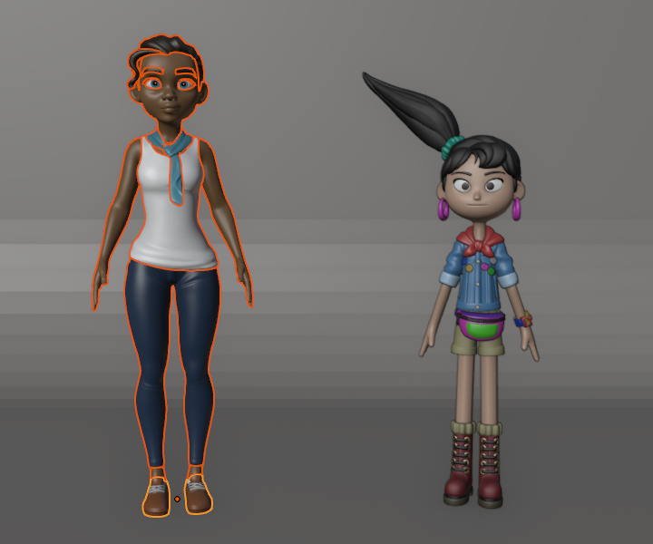
On a production character: the same click on Blender Studio's Rain takes her shoe in plain Blender, all 18 of her objects with Wholegrip.
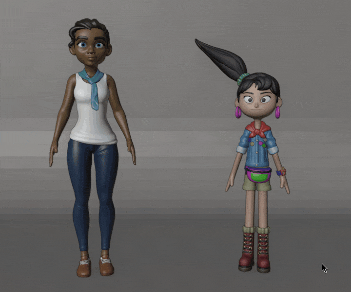
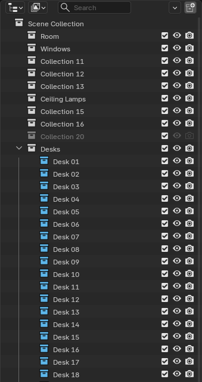
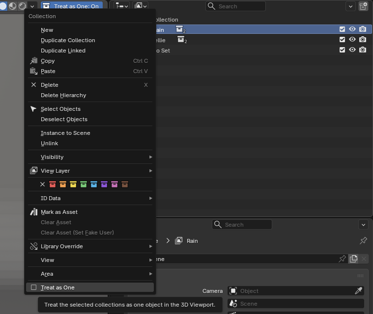
One modifier stack per collection
Before
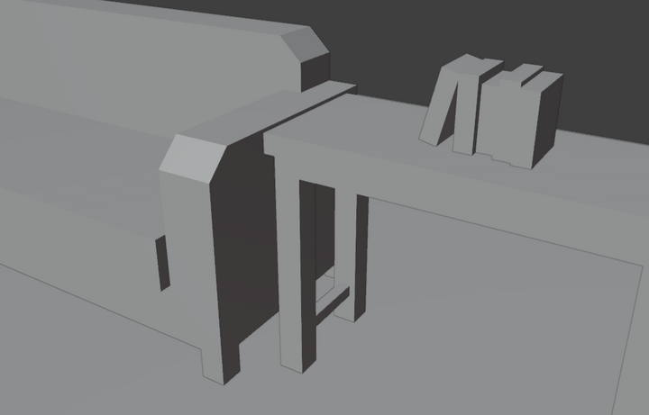
One Bevel + Weighted Normal, set once

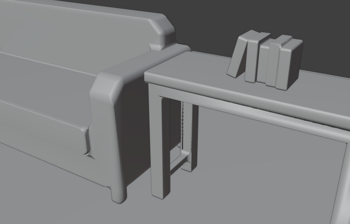
Seven Kenney Furniture Kit models (CC0) in one collection: one Bevel and one Weighted Normal, set once in the collection's panel.
Before
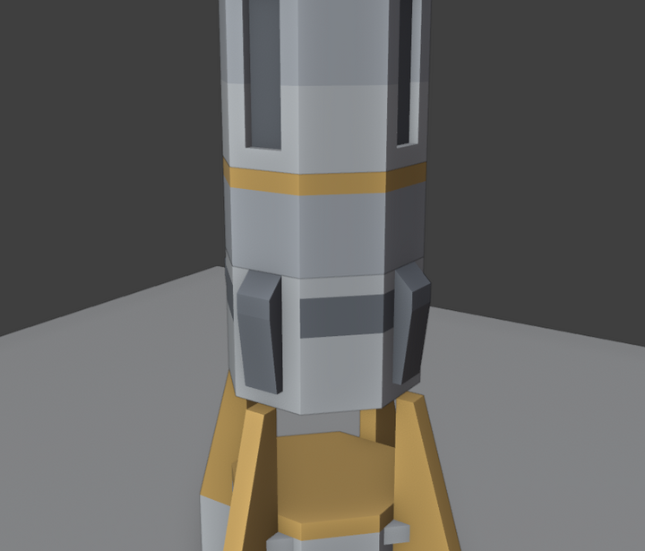
One Geometry Nodes modifier, set once

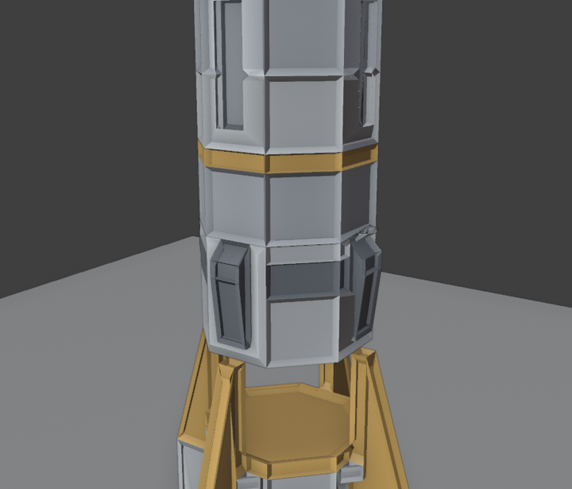
Kitbash: a rocket of five Kenney Space Kit parts (CC0) in one collection. One Geometry Nodes modifier (our Panel Inset node group), Inset and Depth typed once: panels on all five parts; a generator in another collection is untouched.
How the stack works
- Each box has Blender's own modifier header: name, Edit Mode, viewport and render toggles, a ⌄ menu with Apply (that modifier on every member), Duplicate, the moves and Remove, and a ✕. Change a value, rename, reorder or toggle, and every member follows. A box's All Settings line opens the rest of that modifier's settings in Blender's own sections. Type in Add Modifier to search, as in Blender's own menu.
- Parts moved into the collection get the stack; parts moved out lose it. Each part's own modifiers stay, and vertex-group fields stay per object.
- Geometry Nodes: pick a node group or press New; the node group and its input values stay in step. Blender's node-group field counts one user more than you have parts: Wholegrip's hidden stack helper (below) uses the node group too.
- Apply to All and Remove from All ask first, saying how many modifiers and members they will change, and Ctrl+Z undoes them.
- The copies are ordinary modifiers, so the file opens and renders the same without the add-on. A collection with collection modifiers also gets one hidden helper object,
.Wholegrip stack <name>, linked to no scene. No Empties, instances or group objects.
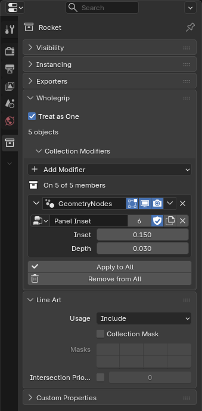
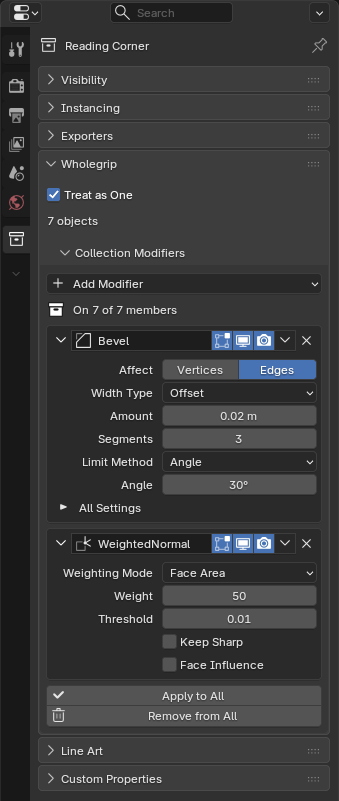
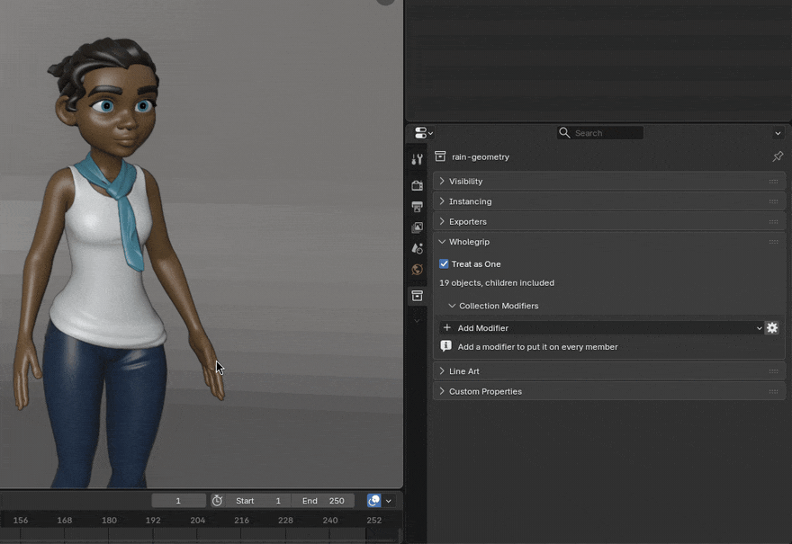
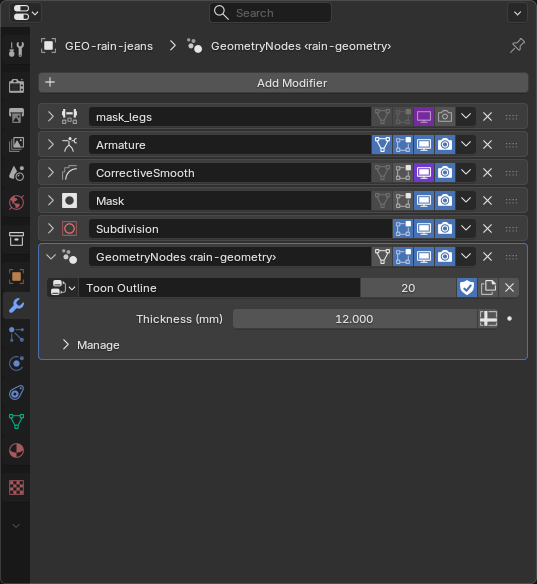
Every view layer at once
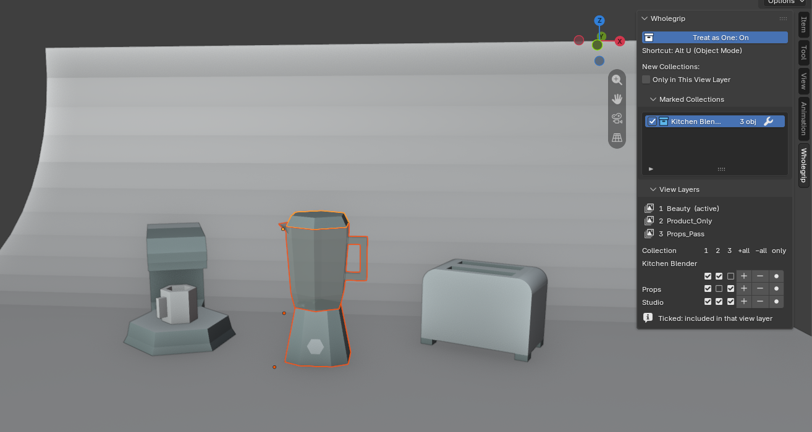
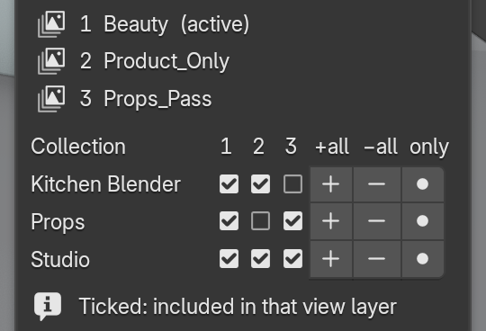
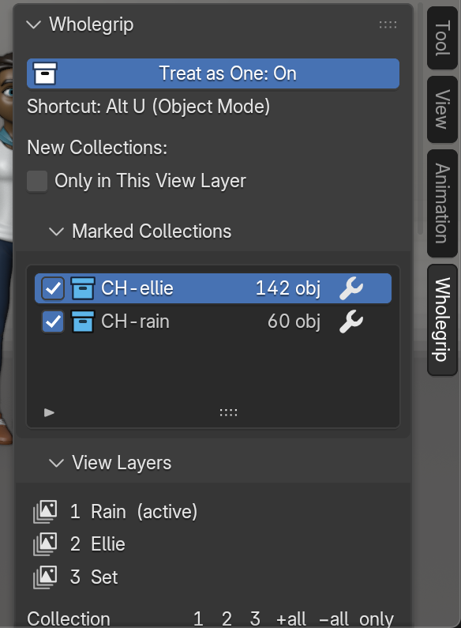
![The Wholegrip tab in the 3D Viewport sidebar at Blender's default width: the Treat as One switch, the New Collections option, the marked collections CH-ellie and CH-rain with blue icons, object counts and wrench buttons, then View Layers: a key reading 1 Rain (active), 2 Ellie, 3 Set, and a grid headed 1, 2, 3, +all, −all and only, its first rows: CH-rain ticked in column 1 only, its child collections with a dash in columns 2 and 3; the names that fit sit beside their checkboxes, rain-geometry and rain-eyes-viewport on a line of their own above them](img/sidebar-tab.png)
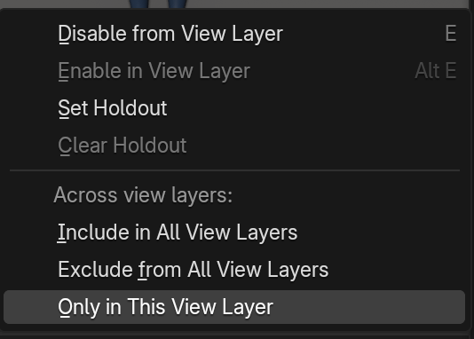
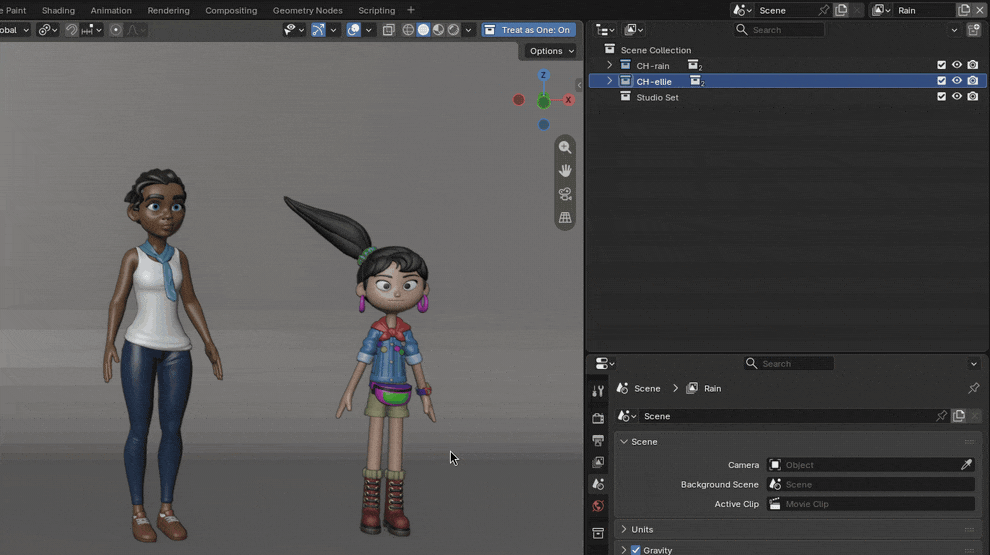
The menu and the options
- Include in All View Layers, Exclude from All View Layers and Only in This View Layer act on every selected collection, from the Outliner or from each grid row.
- If a parent collection is excluded in some layer, Wholegrip leaves the parent alone and leaves the collection out of that layer too, as Blender does when you exclude a parent; the status bar says where it was included and where it was left out.
- An option, off by default, makes new collections start in the active view layer only.
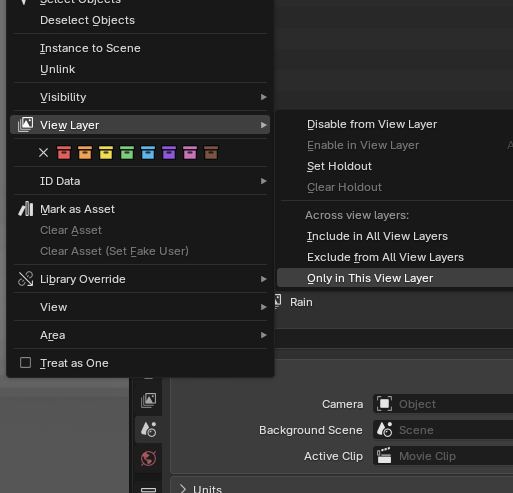
Limits
No group pivot or shared Edit Mode; modifiers only; include and exclude only; one scene at a time.
Every limit
- It doesn't expose single properties of objects inside a linked or instanced collection, and it never edits linked or library-overridden data.
- Moving a selected collection uses Blender's own multi-object transform. Nested groups follow one rule: the deepest marked collection wins.
- No constraints or materials are kept in step. Lights, cameras and empties get no modifiers.
- Not holdout, indirect only or viewport hide across view layers.
- Circle and Lasso selection stay plain Blender. No export. English only.
- A copy edited directly on one part keeps that edit until the next change made in the panel.
How we tested
Tested on five Blender versions, 4.2 LTS to 5.2 LTS, on Linux, with real mouse and keyboard input in a full Blender window. Not yet tested on a Windows PC or a Mac.
The test runs, and how these pictures were made
| Blender (official Linux builds) | Automated tests | In a Blender window | Real mouse and key events |
|---|---|---|---|
| 4.2.23 LTS, 4.5.15 LTS, 5.0.1, 5.1.2 and 5.2.3 LTS | 218 passed, 0 failed, on each | 8 passed on each | 34 of 34 on each |
Wholegrip 1.1.4, 10 November 2026. The real-input checks send real mouse and key events to Blender: Ctrl+click over a plate with bolts under it, Shift+D and Alt+D, the Tweak tool and right-click select on a chair standing on a floor (press and drag moves the chair, never the floor), a click on the spot just Ctrl+clicked (the chair, not the floor behind it), one Ctrl+Z after Shift+D (the copy and its new collection both go) and, new in 1.1.4, typing "weig" in Add Modifier (it searches and adds Weighted Normal). Every panel, button, menu entry, checkbox and shortcut is also driven with real input in a full Blender window, a screenshot per step: 57 of 57 steps on Blender 5.2.3 and on 4.2.23. On 2,000 objects in 200 marked collections, a click selection took 0.048 s and one value change on a 50-member stack 0.018 s (Blender 5.2.3, measured on 1.0.1). The 218 automated tests also pass with Blender 4.2.23's official Windows build run under Wine, a Windows compatibility layer on Linux; that is not a Windows PC, so Windows is still listed as not tested. Wholegrip is pure Python on Blender's own API with no system-specific code.
The pictures are real captures of the full Blender 5.2.3 window on a virtual display, driven by real mouse and keyboard input, with Wholegrip 1.1.4 installed from its zip. The labels above the before/after pictures are set on this page; the grid under the product shot is the same scene's sidebar, drawn by Blender at interface scale 2 right after the product shot; the classroom GIF was brightened after recording and its key labels were added to the recording; the phone versions of the sidebar and the View Layer menu were drawn by Blender at interface scale 2. We posed the two characters and built their backdrop and outline node group; we turned each classroom desk into its own collection of the asset's 23 parts; we merged the vertices the model import splits on the Kenney models, stacked the rocket from its five parts, and built its Panel Inset node group and the product-shot backdrop and lights.
Rain Rig (CC) Blender Foundation | studio.blender.org; Ellie (CC) Blender Foundation | studio.blender.org; CC BY 4.0. Classroom by Christophe Seux (CC0). Furniture Kit and Space Kit by Kenney (CC0). Not included with Wholegrip.
Details
- Buying: download by email after checkout; 14-day refund if it doesn't work as described. Studio, up to 10 people: $48, email us.
- Privacy: no network calls, no telemetry, no licence check.
- Install: Install from Disk in Blender's Get Extensions; see the quick start.
- Support: support@ochrestack.com
$12 once · source included · 14-day refund